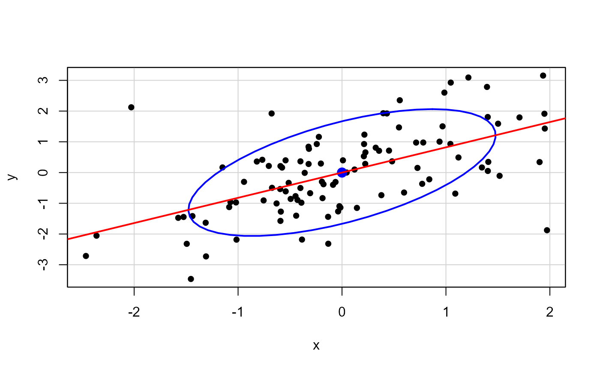
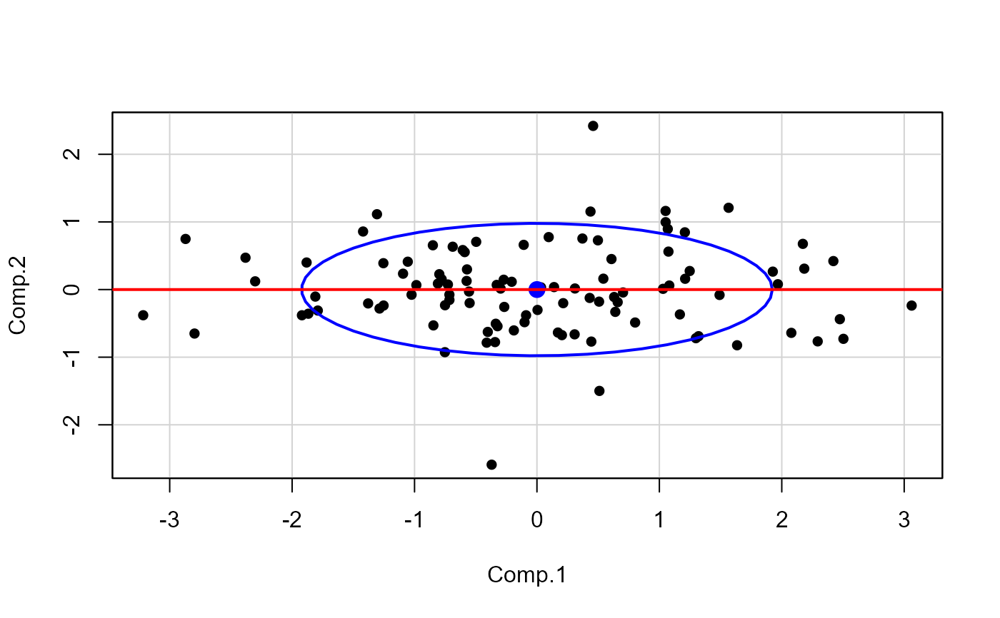

Plot an interpolation between two related data sets, typically transformations of each other. This function is designed to be used in animations.
Usage
interpPlot(
xy1,
xy2,
alpha,
xlim,
ylim,
points = TRUE,
add = FALSE,
col = palette()[1],
ellipse = FALSE,
ellipse.args = NULL,
abline = FALSE,
col.lines = palette()[2],
lwd = 2,
id.method = "mahal",
labels = rownames(xy1),
id.n = 0,
id.cex = 1,
id.col = palette()[1],
segments = FALSE,
segment.col = "darkgray",
...
)Arguments
- xy1
First data set, a 2-column matrix or data.frame
- xy2
Second data set, a 2-column matrix or data.frame
- alpha
The value of the interpolation fraction, typically (but not necessarily)
0 <= alpha <= 1).- xlim, ylim
x, y limits for the plot. If not specified, the function uses the ranges of
rbind(xy1, xy2).- points
Logical. Whether to plot the points in the current interpolation?
- add
Logical. Whether to add to an existing plot?
- col
Color for plotted points.
- ellipse
logical.
TRUEto plot adataEllipse- ellipse.args
other arguments passed to
dataEllipse- abline
logical.
TRUEto plot the linear regression line forXY- col.lines
line color
- lwd
line width
- id.method
How points are to be identified. See
showLabels.- labels
observation labels
- id.n
Number of points to be identified. If set to zero, no points are identified.
- id.cex
Controls the size of the plotted labels. The default is 1
- id.col
Controls the color of the plotted labels.
- segments
logical.
TRUEto draw lines segments fromxy1toxy- segment.col
line color for segments
- ...
other arguments passed to
plot()
Details
Points are plotted via the linear interpolation, $$ XY = XY1 + \alpha (XY2 - XY1)$$
The function allows plotting of the data ellipse, the linear regression line, and line segments showing the movement of points.
Interpolations other than linear can be obtained by using a non-linear
series of alpha values. For example
alpha=sin(seq(0,1,.1)/sin(1) will give a sinusoid interpolation.
Note
The examples here just use on-screen animations to the console
graphics window. The animation package provides
facilities to save these in various formats.
Examples
#################################################
# animate an AV plot from marginal to conditional
#################################################
data(Duncan, package="carData")
duncmod <- lm(prestige ~ income + education, data=Duncan)
mod.mat <- model.matrix(duncmod)
# function to do an animation for one variable
dunc.anim <- function(variable, other, alpha=seq(0, 1, .1)) {
var <- which(variable==colnames(mod.mat))
duncdev <- scale(Duncan[,c(variable, "prestige")], scale=FALSE)
duncav <- lsfit(mod.mat[, -var], cbind(mod.mat[, var], Duncan$prestige),
intercept = FALSE)$residuals
colnames(duncav) <- c(variable, "prestige")
lims <- apply(rbind(duncdev, duncav),2,range)
for (alp in alpha) {
main <- if(alp==0) paste("Marginal plot:", variable)
else paste(round(100*alp), "% Added-variable plot:", variable)
interpPlot(duncdev, duncav, alp, xlim=lims[,1], ylim=lims[,2], pch=16,
main = main,
xlab = paste(variable, "| ", alp, other),
ylab = paste("prestige | ", alp, other),
ellipse=TRUE, ellipse.args=(list(levels=0.68, fill=TRUE, fill.alpha=alp/2)),
abline=TRUE, id.n=3, id.cex=1.2, cex.lab=1.25)
Sys.sleep(1)
}
}
# show these in the R console
if(interactive()) {
dunc.anim("income", "education")
dunc.anim("education", "income")
}
############################################
# correlated bivariate data with 2 outliers
# show rotation from data space to PCA space
############################################
set.seed(123345)
x <- c(rnorm(100), 2, -2)
y <- c(x[1:100] + rnorm(100), -2, 2)
XY <- cbind(x=x, y=y)
rownames(XY) <- seq_along(x)
XY <- scale(XY, center=TRUE, scale=FALSE)
# start, end plots
car::dataEllipse(XY, pch=16, levels=0.68, id.n=2)
#> Warning: "id.n" is not a graphical parameter
#> Warning: "id.n" is not a graphical parameter
#> Warning: "id.n" is not a graphical parameter
#> Warning: "id.n" is not a graphical parameter
#> Warning: "id.n" is not a graphical parameter
#> Warning: "id.n" is not a graphical parameter
#> Warning: "id.n" is not a graphical parameter
#> Warning: "id.n" is not a graphical parameter
mod <- lm(y~x, data=as.data.frame(XY))
abline(mod, col="red", lwd=2)

pca <- princomp(XY, cor=TRUE)
scores <- pca$scores
car::dataEllipse(scores, pch=16, levels=0.68, id.n=2)
#> Warning: "id.n" is not a graphical parameter
#> Warning: "id.n" is not a graphical parameter
#> Warning: "id.n" is not a graphical parameter
#> Warning: "id.n" is not a graphical parameter
#> Warning: "id.n" is not a graphical parameter
#> Warning: "id.n" is not a graphical parameter
#> Warning: "id.n" is not a graphical parameter
#> Warning: "id.n" is not a graphical parameter
abline(lm(Comp.2 ~ Comp.1, data=as.data.frame(scores)), lwd=2, col="red")

# show interpolation
# functions for labels, as a function of alpha
main <- function(alpha) {if(alpha==0) "Original data"
else if(alpha==1) "PCA scores"
else paste(round(100*alpha,1), "% interpolation")}
xlab <- function(alpha) {if(alpha==0) "X"
else if(alpha==1) "PCA.1"
else paste("X +", alpha, "(X - PCA.1)")}
ylab <- function(alpha) {if(alpha==0) "Y"
else if(alpha==1) "PCA.2"
else paste("Y +", alpha, "(Y - PCA.2)")}
interpPCA <- function(XY, alpha = seq(0,1,.1)) {
XY <- scale(XY, center=TRUE, scale=FALSE)
if (is.null(rownames(XY))) rownames(XY) <- 1:nrow(XY)
pca <- princomp(XY, cor=TRUE)
scores <- pca$scores
for (alp in alpha) {
interpPlot(XY, scores, alp,
pch=16,
main = main(alp),
xlab = xlab(alp),
ylab = ylab(alp),
ellipse=TRUE, ellipse.args=(list(levels=0.68, fill=TRUE, fill.alpha=(1-alp)/2)),
abline=TRUE, id.n=2, id.cex=1.2, cex.lab=1.25, segments=TRUE)
Sys.sleep(1)
}
}
# show in R console
if(interactive()) {
interpPCA(XY)
}
if (FALSE) {
library(animation)
saveGIF({
interpPCA(XY, alpha <- seq(0,1,.1))},
movie.name="outlier-demo.gif", ani.width=480, ani.height=480, interval=1.5)
}